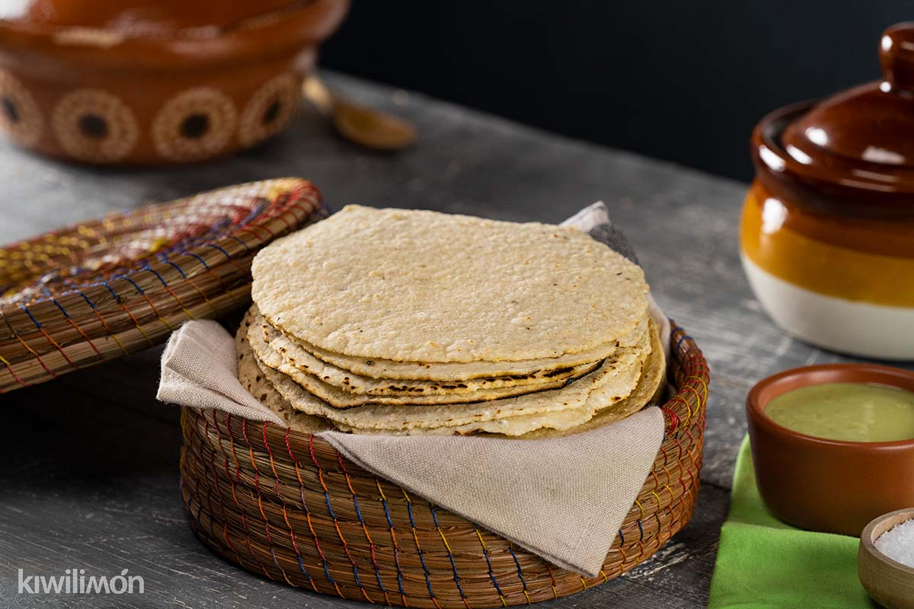

Tortillas
Disfruta de la auténtica experiencia culinaria de Guatemala con nuestras tortillas de maíz frescas y recién hechas. Elaboradas con maíz seleccionado y siguiendo recetas tradicionales, nuestras tortillas son el acompañamiento perfecto para cualquier comida guatemalteca.
Nuestras tortillas son suaves, flexibles y tienen un sabor delicioso que complementa perfectamente cualquier platillo. Ya sea que las uses para envolver tacos, enchiladas, o simplemente como un acompañamiento para disfrutar con frijoles y queso, nuestras tortillas te brindarán una experiencia culinaria inigualable.
¡Ven y llévate un paquete de nuestras tortillas de maíz frescas hoy mismo y lleva el auténtico sabor de Guatemala a tu mesa!
estan disponibles por tan solo 3x1 quetzal
